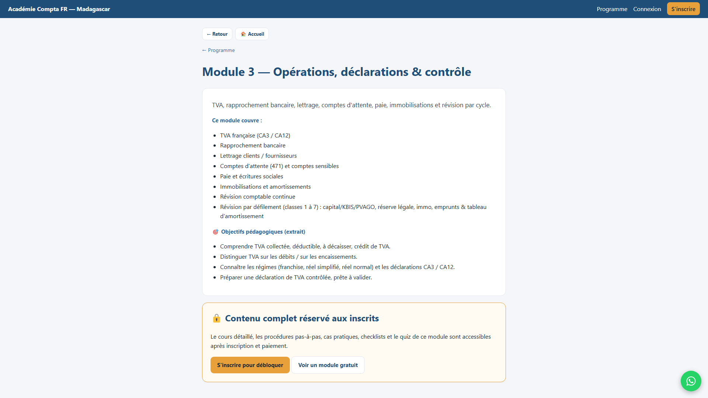

🎬 Vos visuels de la plateforme (pour la vidéo)
La méthode la plus simple (images + voix → vidéo)
1 Téléchargez les 4 images ci-dessous (bouton « Télécharger »).
2 Générez la voix-off du script (D-ID, ElevenLabs, ou enregistrez votre voix) → un fichier MP3.
3 Dans CapCut (gratuit) ou Canva : glissez les 4 images + le MP3 → la vidéo se monte toute seule → Exporter. C'est joué ✅
Astuce : dans D-ID, vous pouvez aussi mettre chaque image en fond de scène et votre photo en présentateur dans le coin. Mais CapCut/Canva = le plus rapide.

🎙️ « Bienvenue sur l'Académie Compta FR : la plateforme qui forme les comptables de Madagascar à travailler sur de vrais dossiers français. »
⬇️ Télécharger

🎙️ « Quatre modules, vingt-quatre leçons : des fondamentaux à la fiscalité, le bilan et la liasse. Et le Module 1 est entièrement gratuit. »
⬇️ Télécharger

🎙️ « Une visite guidée vous montre tout votre accès : cours, logiciel Pennylane, CERFA interactifs, et un suivi personnalisé. »
⬇️ Télécharger

🎙️ « Testez gratuitement le Module 1 : des explications claires, des exemples chiffrés et des quiz interactifs. Rendez-vous sur academiecomptafr.mg ! »
⬇️ Télécharger
📚 Présentation du programme, module par module
Idéal pour une vidéo « tour du programme » : 1 image = 1 module, avec le texte à dire.

🎙️ « Module 1, gratuit : les fondamentaux — rôle du cabinet, RGPD, plan comptable général, organisation du dossier et saisie des écritures de base. »
⬇️ Télécharger

🎙️ « Module 2 : le logiciel Pennylane de A à Z — rapprochement bancaire, TVA, immobilisations, cadrage, opérations intracommunautaires et intercos, avec des exemples chiffrés. »
⬇️ Télécharger

🎙️ « Module 3 : opérations et contrôle — TVA, lettrage, comptes d'attente, paie, immobilisations, et la révision par défilement des classes 1 à 7. »
⬇️ Télécharger

🎙️ « Module 4 : fiscalité (IR/IS, BNC), bilan et clôture, liasse fiscale par régime, spécificités par activité, dossier bâtiment, cas pratiques et simulations d'entretien. »
⬇️ Télécharger
Pour les écrans du cours (Pennylane, CERFA, liasse) : connectez-vous en admin, ouvrez la formation et faites un court enregistrement d'écran (Win+G) — à ajouter dans CapCut.
{kind=link}